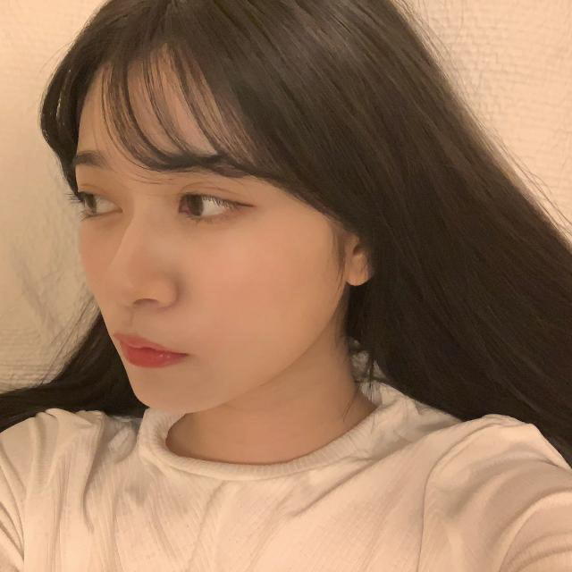
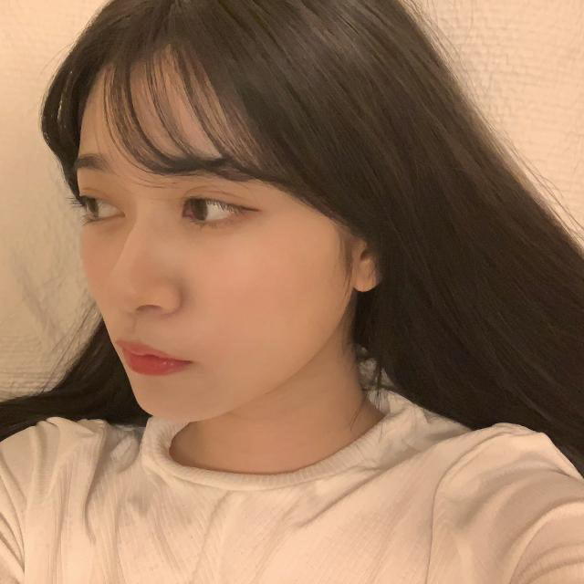

2020/0729Wed愛は与えるものと
歌詞カードを見ながら歌を聴くことが好きなのですが
最近、乃木坂の歌を沢山聴いていて
歌詞が綺麗だなって
MVやお衣装もメンバーの表現も繊細で
最近だとアナスターシャのMVをリピートしてます。
細かくて何回みても楽しめます。
流石衆人監督。☺️
のぎ動画ー。！！！



白米様から約4年、、、
皆んなかっこよく成長しました。
軍団では私自身も沢山成長できました。
最近、乃木坂の歌を沢山聴いていて
歌詞が綺麗だなって
MVやお衣装もメンバーの表現も繊細で
最近だとアナスターシャのMVをリピートしてます。
細かくて何回みても楽しめます。
流石衆人監督。☺️
のぎ動画ー。！！！

白米様から約4年、、、
皆んなかっこよく成長しました。
軍団では私自身も沢山成長できました。

ALL MV COLLECTION２～あの時の彼女たち～
2020年9月9日（水）発売です！！
宜しくお願い致します。☺️
2020/07/29 21:00
コメント(392)
ブログ更新ありがとう！
僕も歌詞カード見ながら音楽聴くのめっちゃ好き！
音楽に浸るっていいよね。幸せになれる。
今日も1日お疲れ様でした！
いつもありがとう！！
僕も歌詞カード見ながら音楽聴くのめっちゃ好き！
音楽に浸るっていいよね。幸せになれる。
今日も1日お疲れ様でした！
いつもありがとう！！
乃木坂の曲はもっと歌詞にも注目をされるべきだね。
素敵な歌詞ばかりで結構グッとくる。
アナスターシャは特別な曲だから、これからも大事に大切にして沢山の人に知ってもらいたいですね。
素敵な歌詞ばかりで結構グッとくる。
アナスターシャは特別な曲だから、これからも大事に大切にして沢山の人に知ってもらいたいですね。
らんらん、こんばんは( ￣▽￣)ﾉｼブログ更新ありがとう♪
乃木坂の楽曲は曲も良いですが歌詞も良いですよね。
さすが秋元康さん。
歌詞カード見ないで耳で聞き分けようとすると、まあやちゃんのように未来卵になってしまいますから歌詞カード大事。
アナスターシャと滑走路はボクのプレイリストでも上位に入ってるので毎日聴いてます。
アナスターシャのMVはダンスシーン秀逸ですね♪
↑お写真、目線あっちゃむいてほいからのこっち急に目線はぼくのツボで嬉しいなぁ♪
ALL MV COLLECTION2予約しましたー。
楽しみだなぁ♪５年ぶりですからね。
ひょろひょろくん長年いっしょなのにくたびれてないのは、らんらんがとても大切にしてるのが分かりますね:-)
乃木坂の楽曲は曲も良いですが歌詞も良いですよね。
さすが秋元康さん。
歌詞カード見ないで耳で聞き分けようとすると、まあやちゃんのように未来卵になってしまいますから歌詞カード大事。
アナスターシャと滑走路はボクのプレイリストでも上位に入ってるので毎日聴いてます。
アナスターシャのMVはダンスシーン秀逸ですね♪
↑お写真、目線あっちゃむいてほいからのこっち急に目線はぼくのツボで嬉しいなぁ♪
ALL MV COLLECTION2予約しましたー。
楽しみだなぁ♪５年ぶりですからね。
ひょろひょろくん長年いっしょなのにくたびれてないのは、らんらんがとても大切にしてるのが分かりますね:-)
蘭世ーーーーーー
白米様大好きや～～～
Fan from New York City, US
白米様大好きや～～～
Fan from New York City, US
いつもありがとう！
ブログ更新ありがとう
乃木坂の歌詞はいつも綺麗だよね、、儚さもあり切なさもあり全部ひっくるめて綺麗なイメージある。
それをお顔や雰囲気やダンスが綺麗な乃木坂ちゃんがパフォーマンスしてるからもう一つの芸術だと思う
らんちゃんお疲れ＼(^o^)／東京コロナ気を付けてね。こちらは、田舎だから少し大丈夫です。でも、この雨で、野菜が、なかなか育ちません。らんちゃん達と、乃木坂工事中で、乃木坂野菜作るのが、夢です。体調に気を付けて仕事ファイトです。
こんばんは！
MV集第２弾が出るね。今から楽しみ！
そう言えば第１弾の時は、サンエトでミニライブとサイン会だったね。
東京の時はライブに入れなかったけど、目の前で円陣を見る事ができたのが、今でも大切な思い出です。
もちろん、心の中で円陣に参加してたよ。
MV集第２弾が出るね。今から楽しみ！
そう言えば第１弾の時は、サンエトでミニライブとサイン会だったね。
東京の時はライブに入れなかったけど、目の前で円陣を見る事ができたのが、今でも大切な思い出です。
もちろん、心の中で円陣に参加してたよ。
急なブログ！更新頻度早くて嬉しいです！！ありがとうございます！！
なかなか歌詞カード見ないと分からないこともありますからね、自分もよく見ますよ～乃木坂の曲は本当にいい歌詞が多いので！
衆人監督は本当に素晴らしい監督です！2期生と一緒に仕事してるだけあって色々わかってる！アナスターシャとか白米様、ライブ神、ブランコなどなど！本当に良きMVを作り出してる人ですからね！また撮って欲しいです！
白米様から4年…早いですね
今では増えて減ってですが、いつかまた、5人揃ってるところが見たいです
ALL MV COLLECTION！買う予定です！特典で決めかねてますが…どこかの店舗で買います！！
前回からモバメの内容どう送ろうかまとめてたので、また次に書く予定です…
何かしらはちゃんとコメントします！！
自撮り画像いつもありがとうございます！
ピースといえば蘭世さんみたいなところがあるので(ボーダーとかサコッシュの影響かな？)めっちゃ可愛いです、目線ズレてても良き
そしてこのアングル、もう好きです
今回の1曲！
Orangestarさんが作った「アスノヨゾラ哨戒班」！
Orangestarさんは通称ボカロPと呼ばれる方ですね
その中でも特に有名な曲で…蘭世さんなら知ってそうかな？
最後には未来に希望を持つ素晴らしい曲なので聞いた事なかったらぜひ！
ではまたコメントします！
黒T
なかなか歌詞カード見ないと分からないこともありますからね、自分もよく見ますよ～乃木坂の曲は本当にいい歌詞が多いので！
衆人監督は本当に素晴らしい監督です！2期生と一緒に仕事してるだけあって色々わかってる！アナスターシャとか白米様、ライブ神、ブランコなどなど！本当に良きMVを作り出してる人ですからね！また撮って欲しいです！
白米様から4年…早いですね
今では増えて減ってですが、いつかまた、5人揃ってるところが見たいです
ALL MV COLLECTION！買う予定です！特典で決めかねてますが…どこかの店舗で買います！！
前回からモバメの内容どう送ろうかまとめてたので、また次に書く予定です…
何かしらはちゃんとコメントします！！
自撮り画像いつもありがとうございます！
ピースといえば蘭世さんみたいなところがあるので(ボーダーとかサコッシュの影響かな？)めっちゃ可愛いです、目線ズレてても良き
そしてこのアングル、もう好きです
今回の1曲！
Orangestarさんが作った「アスノヨゾラ哨戒班」！
Orangestarさんは通称ボカロPと呼ばれる方ですね
その中でも特に有名な曲で…蘭世さんなら知ってそうかな？
最後には未来に希望を持つ素晴らしい曲なので聞いた事なかったらぜひ！
ではまたコメントします！
黒T
白米様
ブランコ
滑走路
そして アナスターシャ
・・・・みんな楽しみです
ブランコ
滑走路
そして アナスターシャ
・・・・みんな楽しみです
蘭世ちゃんブログ更新ありがとう！
乃木坂の曲ホントに好き！
普通に聴くのも良きだけどやっぱりライブで生で蘭世ちゃん、乃木坂ちゃんが歌う姿をみて盛り上がるのがやっぱり好きかな
白米様もその中で大好きな曲
ライブじゃ絶対に盛り上がるよね
さゆりんご軍団はライブでは扇の要みたいなものだもん
これから単独でのライブがやれたらいいよね
絶対行きたいもん
ALL MV COLLECTION２～あの時の彼女たち～買うか迷ってたけど
絶対に買うね蘭世ちゃんに言われたからには絶対に買うよ!
楽しみ〜
乃木坂の曲ホントに好き！
普通に聴くのも良きだけどやっぱりライブで生で蘭世ちゃん、乃木坂ちゃんが歌う姿をみて盛り上がるのがやっぱり好きかな
白米様もその中で大好きな曲
ライブじゃ絶対に盛り上がるよね
さゆりんご軍団はライブでは扇の要みたいなものだもん
これから単独でのライブがやれたらいいよね
絶対行きたいもん
ALL MV COLLECTION２～あの時の彼女たち～買うか迷ってたけど
絶対に買うね蘭世ちゃんに言われたからには絶対に買うよ!
楽しみ〜
ブログ更新ありがとう
いつもブログやモバメ、とまらんぜを楽しみにしてます
軍団ライブもできる事を待ってます
いつもブログやモバメ、とまらんぜを楽しみにしてます
軍団ライブもできる事を待ってます
らんぜぴんブログ更新ありがとう！！
乃木坂の歌詞も曲調も衣装も映像ももちろんメンバーも全部が綺麗で美しいから永遠に見ていられる、、、！！
蘭世ちゃんはアナスターシャをよく聞くって前にも言ってたね！わたしもたくさん聴いてるよ〜！！アナスターシャのMVは今までの二期生を振り返っているMVになっているから何度見ても感動してしまう、、、わたしも大好き！！
はぁぁ！！！後ろ姿ぁ、、後ろ姿だけどみんななんだか若い、、笑 4年経っても綺麗で面白くてかわいすぎる軍団！！一生ついていきます！！
蘭世ちゃんも体調に気をつけてね！☺︎
乃木坂の歌詞も曲調も衣装も映像ももちろんメンバーも全部が綺麗で美しいから永遠に見ていられる、、、！！
蘭世ちゃんはアナスターシャをよく聞くって前にも言ってたね！わたしもたくさん聴いてるよ〜！！アナスターシャのMVは今までの二期生を振り返っているMVになっているから何度見ても感動してしまう、、、わたしも大好き！！
はぁぁ！！！後ろ姿ぁ、、後ろ姿だけどみんななんだか若い、、笑 4年経っても綺麗で面白くてかわいすぎる軍団！！一生ついていきます！！
蘭世ちゃんも体調に気をつけてね！☺︎
蘭世〜！こんばんは〜
ブログ更新ありがとう！
歌詞カード見ながら聴くのいいね〜
おれもやってみようかな
アナスターシャのMVは今は忙しいけど、MV公開された時とかめちゃくちゃリピートしてた！
色んなとこに2期生の要素が詰まっててほんとに素敵なMVだよね
衆人監督にはほんとに感謝…！
写真はのぎ動画の告知動画の時のやつだよね
46時間テレビの人狼終わったあと、さぁ仮眠しようって思ったら蘭世の動画が投稿されて目が覚めた笑
白米様から4年経ったんだね〜
かなりんも卒業したら軍団長と蘭世だけになっちゃって寂しい…
でもさゆりんご軍団には卒業制度がないらしいから単独ライブ待ってるよ！笑
MV集楽しみー！
じゃあまた！
ブログ更新ありがとう！
歌詞カード見ながら聴くのいいね〜
おれもやってみようかな
アナスターシャのMVは今は忙しいけど、MV公開された時とかめちゃくちゃリピートしてた！
色んなとこに2期生の要素が詰まっててほんとに素敵なMVだよね
衆人監督にはほんとに感謝…！
写真はのぎ動画の告知動画の時のやつだよね
46時間テレビの人狼終わったあと、さぁ仮眠しようって思ったら蘭世の動画が投稿されて目が覚めた笑
白米様から4年経ったんだね〜
かなりんも卒業したら軍団長と蘭世だけになっちゃって寂しい…
でもさゆりんご軍団には卒業制度がないらしいから単独ライブ待ってるよ！笑
MV集楽しみー！
じゃあまた！
蘭世♡蘭世蘭世♡♡
ブログありがとう〜( *´﹀`* )( *´﹀`* )
歌詞カードって良いよね( *´﹀`* )
CDの魅力の１つ！配信では味わえない物だよね〜。
お部屋蘭世可愛いな( *´﹀`* )
またたくさん自撮り見たいよ♡
PV集発売か〜！
滑走路！たくさん観たけど、また観れるかな( *´﹀`* )
蘭世たくさん見つけるよ〜( *´﹀`* )( *´﹀`* )
ブログありがとう〜( *´﹀`* )( *´﹀`* )
歌詞カードって良いよね( *´﹀`* )
CDの魅力の１つ！配信では味わえない物だよね〜。
お部屋蘭世可愛いな( *´﹀`* )
またたくさん自撮り見たいよ♡
PV集発売か〜！
滑走路！たくさん観たけど、また観れるかな( *´﹀`* )
蘭世たくさん見つけるよ〜( *´﹀`* )( *´﹀`* )
蘭世かわいい
蘭世こんばんは！
のぎ動画のcm、すごい好きです！彼女感あってたまらなかったです！
乃木坂の曲ってメロディーはもちろんのこと、歌詞、MV、どれをとってもいいですよね。
個人的にはオフショットが楽しみです！アナスターシャのオフショットがあれば、二期生が涙しているシーンが見れるかもですね。
楽しみにしています！
のぎ動画のcm、すごい好きです！彼女感あってたまらなかったです！
乃木坂の曲ってメロディーはもちろんのこと、歌詞、MV、どれをとってもいいですよね。
個人的にはオフショットが楽しみです！アナスターシャのオフショットがあれば、二期生が涙しているシーンが見れるかもですね。
楽しみにしています！
可愛いすぎます
蘭世、こんばんは
反乱軍のスパイとしてファーストオーダーに
追われながら、応援している
まさとです
ミュージックビデオ第二弾発売ですね
今回は滑走路のミュージックビデオが
入ってますよね楽しみ
このミュージックビデオを買えば
もう蘭世とお別れできるかな
乃木坂の活動の再開がはっきり
しないからね
ではまたね
いつもモバメありがとう
バイバイ
反乱軍のスパイとしてファーストオーダーに
追われながら、応援している
まさとです
ミュージックビデオ第二弾発売ですね
今回は滑走路のミュージックビデオが
入ってますよね楽しみ
このミュージックビデオを買えば
もう蘭世とお別れできるかな
乃木坂の活動の再開がはっきり
しないからね
ではまたね
いつもモバメありがとう
バイバイ
蘭世～。 相変わらず元気そうで何よりです。
てか乃木坂の歌は本当に良いですね～。会えない分、車の中はずっと乃木坂の歌です。✌️後、ALL MV
COLLECTION２～あの時の彼女たち～は今日、セブンネットで予約しました。早く会いに行きたいです。☺️会える日迄、ずっと楽しみにしてます。すいません
ラブ ♥️❤️ラブ ♥️❤️
ブログありがとう！
卒業したメンバーが増えてるけどみんな成長してるね！
白米様。いい曲だね。
ロケ地に行きたいなって思っていた矢先にこのご時世。
遠分行くことが行けないのが悔しいです。
アナスターシャのロケ地も行こう行こうと予定は何度も組み直してるけどあまり状況が良くならないので行けてなくてほんとに悔しい。
冬にはやっとブランコのロケ地に行けました。
MV撮影から何年もたったから少し変わってたけど、画面の中で力強く踊る蘭世を初めとするアンダーメンバーが浮かんできて初めてなのに懐かしく感じました。
MVは曲をイメージするのにとても想像しやすくて印象強く残ります。発売楽しみですね。のぎ動画も楽しませてもらいます！
またコメントします！じんす。
卒業したメンバーが増えてるけどみんな成長してるね！
白米様。いい曲だね。
ロケ地に行きたいなって思っていた矢先にこのご時世。
遠分行くことが行けないのが悔しいです。
アナスターシャのロケ地も行こう行こうと予定は何度も組み直してるけどあまり状況が良くならないので行けてなくてほんとに悔しい。
冬にはやっとブランコのロケ地に行けました。
MV撮影から何年もたったから少し変わってたけど、画面の中で力強く踊る蘭世を初めとするアンダーメンバーが浮かんできて初めてなのに懐かしく感じました。
MVは曲をイメージするのにとても想像しやすくて印象強く残ります。発売楽しみですね。のぎ動画も楽しませてもらいます！
またコメントします！じんす。
蘭世ブログ更新ありがとう！
ハルジオンの歌詞だね。
乃木坂だから出せる色だなって、歌を聴くと思うね。
オレはかなりんが卒業発表したのをきっかけにサンエトの君に贈る花がないのMVを何回も観てる。MVも衣装も歌詞もメンバーも全部好きだなぁって改めて思った。
アイキャッチ蘭世だ！
良き良き。
ハルジオンからだから、白米様も入ってるね。
買わねば！
ハルジオンの歌詞だね。
乃木坂だから出せる色だなって、歌を聴くと思うね。
オレはかなりんが卒業発表したのをきっかけにサンエトの君に贈る花がないのMVを何回も観てる。MVも衣装も歌詞もメンバーも全部好きだなぁって改めて思った。
アイキャッチ蘭世だ！
良き良き。
ハルジオンからだから、白米様も入ってるね。
買わねば！
俺も聴いてるよ！
蘭世ちゃん、ブログ有り難うございます!!!
乃木坂46さんの楽曲は寄り添ってくれる感じがして、いつも励ましてもらったり元気をもらっています!
最近は『僕の思い込み』がお気に入りです。「君に会うと たったそれだけのことで また明日頑張れるんだ」久しぶりにバッタリ同級生に会って、少し話しただけなのに元気になれたんです!やっぱり友人の存在は偉大だなと感じました!!!
MV集の2弾の発売が発表されましたね!『アナスターシャ』のメイキングも観られるのかな?楽しみでたまらんぜです!
乃木坂46さんの楽曲は寄り添ってくれる感じがして、いつも励ましてもらったり元気をもらっています!
最近は『僕の思い込み』がお気に入りです。「君に会うと たったそれだけのことで また明日頑張れるんだ」久しぶりにバッタリ同級生に会って、少し話しただけなのに元気になれたんです!やっぱり友人の存在は偉大だなと感じました!!!
MV集の2弾の発売が発表されましたね!『アナスターシャ』のメイキングも観られるのかな?楽しみでたまらんぜです!
蘭世さん、ブログ更新ありがとう(>_<)
愛を伝えます。
大好きです…
ずっと、これからも…
アナスターシャ愛
軍団愛
尊き
ありがとう
喜章
(よしあき)
愛を伝えます。
大好きです…
ずっと、これからも…
アナスターシャ愛
軍団愛
尊き
ありがとう
喜章
(よしあき)
ブログ更新ありがとう！
さっき前のブログにコメントしたからビックリだよ〜うれしい♡
乃木動画の蘭世のビジュ最高だったから写真までうれしい！！
暗めの髪色好きです。。
オールMVコレクション欲しい！
大好き〜またね(*´ω｀)
さっき前のブログにコメントしたからビックリだよ〜うれしい♡
乃木動画の蘭世のビジュ最高だったから写真までうれしい！！
暗めの髪色好きです。。
オールMVコレクション欲しい！
大好き〜またね(*´ω｀)
蘭世ブログ更新ありがとう(^・^)
僕も最近カラオケで歌うための練習で歌詞見ながら音楽聴いてた！
2枚目のカメラ目線の自撮りめっちゃ可愛い！
好き！
その女のMVが見たいので前回のMVCOLLECTION見たいに今回の為にまだMV無い曲撮ったり出来たらめっちゃ嬉しいね！
またブログ更新待ってます(^^)v
僕も最近カラオケで歌うための練習で歌詞見ながら音楽聴いてた！
2枚目のカメラ目線の自撮りめっちゃ可愛い！
好き！
その女のMVが見たいので前回のMVCOLLECTION見たいに今回の為にまだMV無い曲撮ったり出来たらめっちゃ嬉しいね！
またブログ更新待ってます(^^)v
蘭世さんブログ更新ありがとうございます！
蘭世さんはほんとに乃木坂のことが好きなんですね！
僕も最近は乃木坂の歌をよく聞きます！特にアナスターシャは何回も聞くし、MVもいまだによくみますよ！
2期生といえば伊藤衆人監督って感じがさらに出た作品だなって思います！
MV collection2は絶対に買いたいと思います！！
こんど感想とか蘭世さんに伝えますね！
琉聖
蘭世さんはほんとに乃木坂のことが好きなんですね！
僕も最近は乃木坂の歌をよく聞きます！特にアナスターシャは何回も聞くし、MVもいまだによくみますよ！
2期生といえば伊藤衆人監督って感じがさらに出た作品だなって思います！
MV collection2は絶対に買いたいと思います！！
こんど感想とか蘭世さんに伝えますね！
琉聖
ブログ更新ありがとう！
乃木坂のMVで好きなのを選ぶのは難しいけど
ハマるきっかけになったのは裸足でSummerですね
友達に乃木坂を勧められて初めて聴いた曲でそこからファンになりました。
衣装は逃げ水とブランコが好きです。
歌詞だとワタボコリですかね。LiveDVDで聴いてから好きになりました。
いつかさゆりんご軍団でLiveとかしたら楽しそうですね！
乃木坂のMVで好きなのを選ぶのは難しいけど
ハマるきっかけになったのは裸足でSummerですね
友達に乃木坂を勧められて初めて聴いた曲でそこからファンになりました。
衣装は逃げ水とブランコが好きです。
歌詞だとワタボコリですかね。LiveDVDで聴いてから好きになりました。
いつかさゆりんご軍団でLiveとかしたら楽しそうですね！
はやくライブや握手会で会いたいです！それを楽しみに今年は受験勉強頑張ります！
ブログ更新ありがとう！
頻度高!?
嬉しいありがとう
アナスターシャ
本当に大好きです
MVに愛が溢れています
ユースケ
頻度高!?
嬉しいありがとう
アナスターシャ
本当に大好きです
MVに愛が溢れています
ユースケ
(*・ｪ･*)ﾉ～☆ｺﾝﾊﾞﾝﾜ♪最愛なる蘭世
おかえり、今日も一日お疲れさま！
ブログ更新ありがとう！
昔は歌詞カード見ながらよく聴いてた。
最近ではYouTubeで動画ながしながら横で歌詞サイトで歌詞見てる
乃木坂の歌詞良いよな。
最近気づいたが昔俺がまだ中学高校ぐらいかなにやってたアニメの歌とかも秋元先生が作詞しててすごく良いなって思った事もあった。
アナスターシャ俺も鬼リピだわ
MVも衆人監督らしさと二期生に対する想いみたいなのが入ってていいよな。
ブランコのMVでは知らんおじさんが映ってたり笑笑
そのまま出しちゃうってのもおもしろい
おお！のぎ動画の時のやつやな
ホンマ可愛いんよな～もう一緒に眠りたくなる
まだまだこれからも成長あるで！
だってさゆりんご軍団は永久に不滅やろ！
あ、今日お知らせで来てたな。
ALL MV COLLECTION２～あの時の彼女たち～
めちゃくちゃ楽しみ！
今日はこのコメントでおやすみを。
今日は疲れてるのかめちゃくちゃ時間が経つのが早く感じる
蘭世
身体のバランス心のバランスを崩さない様にな
おやすみ蘭世
きっとまた明日も笑顔で(｡･ω･)ﾉﾞ
ブログ更新ありがとう☺︎
ハルジオンが咲く頃、大好きな曲です。
なんだか明るい気持ちになれる！
優しさが溢れるような感覚にもなる！
アナスターシャのMVは色々と伏線が素晴らしくて、
何回でも見れるし、
見れば見るほど2期生の良さや歴史が伝わってきます。
こちらも大好きな曲。
お写真も可愛い✌︎
白米様、4年も前なんですね。
さゆりんご軍団好きやー
武道館の夢も叶えたいし、さゆりんご軍団として生き生きとパフォーマンスしている蘭世ちゃんにも会いたいです☺️
すっごくMVを見返したくなってきました☺️
ハルジオンが咲く頃、大好きな曲です。
なんだか明るい気持ちになれる！
優しさが溢れるような感覚にもなる！
アナスターシャのMVは色々と伏線が素晴らしくて、
何回でも見れるし、
見れば見るほど2期生の良さや歴史が伝わってきます。
こちらも大好きな曲。
お写真も可愛い✌︎
白米様、4年も前なんですね。
さゆりんご軍団好きやー
武道館の夢も叶えたいし、さゆりんご軍団として生き生きとパフォーマンスしている蘭世ちゃんにも会いたいです☺️
すっごくMVを見返したくなってきました☺️
MV集2、予約しましたー！発売が楽しみです。のぎ動画の蘭世ちゃんも可愛いよ！！
蘭世ブログ更新ありがとう！
タイトルはハルジオンからかな？
乃木坂にはほんとに素敵な歌詞がたくさんあるね。
ぼくも乃木坂の楽曲の歌詞に何度も元気をもらったし、色々と考えさせてもらいました。
考えれば考えるほど乃木坂の楽曲ってほんとに素晴らしいなと思わされます。
蘭世が最近見返してるアナスターシャはぼくも何度も見てます。
正直、今までの乃木坂の楽曲の中で歴代最高に素敵な歌だと思います。メロディ、歌詞、ダンス、そしてMV、どれをとってもこれまでにないくらい素敵なものだと思っています。
MVに関しては、ぼくは2期生のことがずっと好きである程度の歴史や人柄はわかっているつもりだったけど、MVを見ることによってまだまだ知らないことだらけだったし、物語性をすごく感じて見れば見るほど考えさせられました。ぼくは1から全て調べ直してもう一度MVを見たら、涙が止まりませんでした。2期生のこれまでの軌跡がこのMV、楽曲に込められていて、ぼくは2期生のことがもっともっと好きになりました。どんなに苦しい困難があっても乗り越えられることが出来るのは2期生しかいません。その強さ、優しさをこれからの乃木坂にたくさん伝えてください。
『みんなから私のことがもし見えなくても心配をしないで私はみんなが見えてる』
この言葉はぼくも常に思っています。どこにいても2期生のみんなを応援しています。
ALL MV Collection楽しみにしてます！！
また次のブログ楽しみにしてるねー！
タイトルはハルジオンからかな？
乃木坂にはほんとに素敵な歌詞がたくさんあるね。
ぼくも乃木坂の楽曲の歌詞に何度も元気をもらったし、色々と考えさせてもらいました。
考えれば考えるほど乃木坂の楽曲ってほんとに素晴らしいなと思わされます。
蘭世が最近見返してるアナスターシャはぼくも何度も見てます。
正直、今までの乃木坂の楽曲の中で歴代最高に素敵な歌だと思います。メロディ、歌詞、ダンス、そしてMV、どれをとってもこれまでにないくらい素敵なものだと思っています。
MVに関しては、ぼくは2期生のことがずっと好きである程度の歴史や人柄はわかっているつもりだったけど、MVを見ることによってまだまだ知らないことだらけだったし、物語性をすごく感じて見れば見るほど考えさせられました。ぼくは1から全て調べ直してもう一度MVを見たら、涙が止まりませんでした。2期生のこれまでの軌跡がこのMV、楽曲に込められていて、ぼくは2期生のことがもっともっと好きになりました。どんなに苦しい困難があっても乗り越えられることが出来るのは2期生しかいません。その強さ、優しさをこれからの乃木坂にたくさん伝えてください。
『みんなから私のことがもし見えなくても心配をしないで私はみんなが見えてる』
この言葉はぼくも常に思っています。どこにいても2期生のみんなを応援しています。
ALL MV Collection楽しみにしてます！！
また次のブログ楽しみにしてるねー！
お疲れ様です。
MV集の発売、おめでたいね！
乃木坂ちゃんたちの成長を1曲毎に振り返って観られるのが楽しみです:-)
白米様をはじめ、しゅーと監督のMVは考えられたネタが沢山盛り込まれているのが好きです。アナスターシャは2期生ちゃんへの愛情がこれでもかっ！と伝わりました笑
大好きです。またね:-)
MV集の発売、おめでたいね！
乃木坂ちゃんたちの成長を1曲毎に振り返って観られるのが楽しみです:-)
白米様をはじめ、しゅーと監督のMVは考えられたネタが沢山盛り込まれているのが好きです。アナスターシャは2期生ちゃんへの愛情がこれでもかっ！と伝わりました笑
大好きです。またね:-)
ブログありがとう！
蘭世さんブログ更新ありがとうございます！！
僕明日の30日誕生日です！
アナスターシャのMV大好きです！
僕明日の30日誕生日です！
アナスターシャのMV大好きです！
蘭世ちゃんはのぎ動画登録してる？
こんばんわ
いつも、話してる内容だとか深いなって感じて、かっこいいと思ってます。
m(__)m
いつも、話してる内容だとか深いなって感じて、かっこいいと思ってます。
m(__)m
わーい(๑˃̵ᴗ˂̵)MV COLLECTION 2やっと発売される！！楽しみがまた増えたよ！蘭世を見つけるべ！！
蘭世ー！ブログ更新ありがとうー！
ブログ更新ありがとうございます！！
わたしも改めて乃木坂の曲をたくさん聴いています。
わたし自身、何度も乃木坂の曲に助けられました。
いろんなことで悩みがあり、落ち着かない時に聞いた「悲しみの忘れ方」は自分にとって今でも大きな心の支えです。
なかなか直接会えない世の中ですが、乃木坂からは大きなパワーをいつももらっていて、感謝の気持ちでいっぱいです。
どうかお身体にはお気をつけて、頑張ってください！！
ALL MV COLLECTION２～あの時の彼女たち～楽しみにしています！！！！
わたしも改めて乃木坂の曲をたくさん聴いています。
わたし自身、何度も乃木坂の曲に助けられました。
いろんなことで悩みがあり、落ち着かない時に聞いた「悲しみの忘れ方」は自分にとって今でも大きな心の支えです。
なかなか直接会えない世の中ですが、乃木坂からは大きなパワーをいつももらっていて、感謝の気持ちでいっぱいです。
どうかお身体にはお気をつけて、頑張ってください！！
ALL MV COLLECTION２～あの時の彼女たち～楽しみにしています！！！！
蘭世さん、こんばんは!!
アナスターシャ僕も好きです。
秋元康先生の凄さですよね､､､
お元気そうでとても嬉しいです。
アナスターシャ僕も好きです。
秋元康先生の凄さですよね､､､
お元気そうでとても嬉しいです。
蘭世ブログありがとう！
珍しく？モバメで何も言ってなかったのでびっくりしました！
さゆりんご軍団デビュー4周年おめでとう！
やることなすこと最高に可愛すぎて一番大好きな軍団です！
おーるMVコレクション！
ブランコや滑走路といった蘭世の魅力爆発な曲が来るの楽しみにしてます！
その女がすごい好きなので新録されたら嬉しいなぁ、、、
こんな時でもたくさん楽しませてくれる蘭世が大好きです！
珍しく？モバメで何も言ってなかったのでびっくりしました！
さゆりんご軍団デビュー4周年おめでとう！
やることなすこと最高に可愛すぎて一番大好きな軍団です！
おーるMVコレクション！
ブランコや滑走路といった蘭世の魅力爆発な曲が来るの楽しみにしてます！
その女がすごい好きなので新録されたら嬉しいなぁ、、、
こんな時でもたくさん楽しませてくれる蘭世が大好きです！
蘭世ちゃんに1番センター取って欲しいと思ってる！！！
これからも応援し続けます！！
これからも応援し続けます！！
今週2つ目のブログありがとう！！
アナスターシャは曲もいいけどMVも凄くいいよね！
しゅーと監督だから出来たMVだと思う！！
さゆりんご軍団はどの軍団の中でも1番好きよ！
でも、かなりん卒業したら2人だね…
それでもさゆりんご軍団応援してくよ！
アナスターシャは曲もいいけどMVも凄くいいよね！
しゅーと監督だから出来たMVだと思う！！
さゆりんご軍団はどの軍団の中でも1番好きよ！
でも、かなりん卒業したら2人だね…
それでもさゆりんご軍団応援してくよ！
白米様からもう４年も経ったんだね。
もう４年も経つのかと思うほど、時の流れの早さも感じるよ。楽しい時間が過ぎるのはあっという間なんだと肌で感じているよ。
蘭世も成長したなと感じるよ。これからももっと成長出来るように頑張って下さい。
もう４年も経つのかと思うほど、時の流れの早さも感じるよ。楽しい時間が過ぎるのはあっという間なんだと肌で感じているよ。
蘭世も成長したなと感じるよ。これからももっと成長出来るように頑張って下さい。
かわいい！これからも応援してます( ¨̮ )


乃木坂の曲は勇気付けられたり感動したりして乃木坂は素敵だなっておもってます。
大好き！ブログ更新ありがと